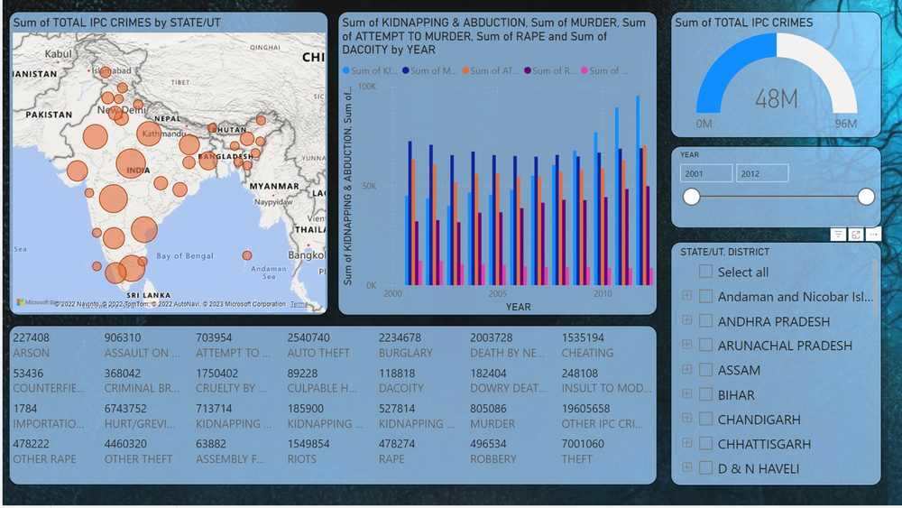

Crime analysis and prediction are crucial aspects of law enforcement, helping identify patterns, prevent crime, and maintain public safety. This project develops a web application that leverages machine learning algorithms to analyze and predict criminal activity in a given area.

How It Works
The application collects data from law enforcement databases, social media, and public records. Data is pre-processed and cleaned before ML algorithms analyze it for patterns and trends in criminal activity.
A predictive model trained on historical crime data forecasts future activity using supervised and unsupervised learning. The model updates continuously to maintain accuracy, and results are displayed on a filterable interface for agencies and the public.
Future Directions
Scalability is a key advantage - prediction accuracy improves as more data is collected. Planned features include real-time alerts, social media monitoring for early indicators, and deeper integration with police infrastructure.